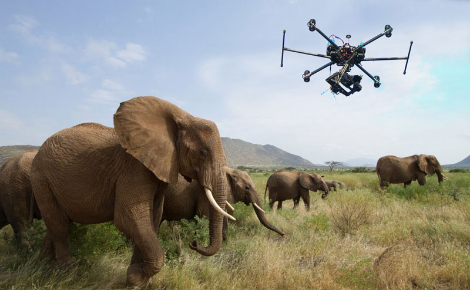

Business and Technology Solutions
How Drones Help the Environment
In today's age, drones are being used by several companies and environmental agencies to make an impact on sustainability. The International Anti-Poaching Foundation (IAPF) uses drone technology to monitor animals in their natural environment. The drones use a combination of thermal imaging cameras and movement detection to monitor wildlife and prevent poachers. The IAPF also trains Green Army Rangers to protect the animals through direct action. If the IAPF detects that an animal is in danger, they will send out their Rangers.

The Environmental Protection Agency also uses drones to monitor pollution levels in the air. Their drones come equipped with geo-spatial air pollution measuring capabilities, and they are used to test the air quality around oil and gas facilities. If there are abnormal levels of emissions in the air, an in-depth inspection may be administered to further analyze the area. This helps ensure that industries comply with environmental law.
